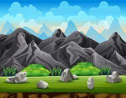
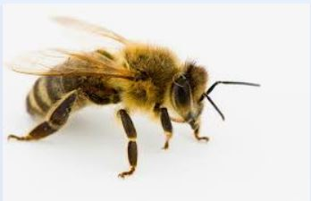
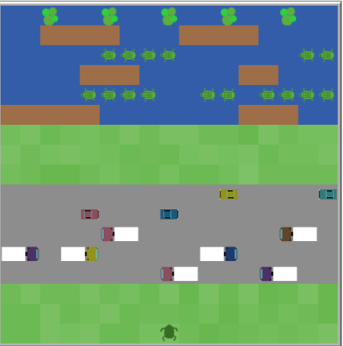

This is my Portfolio Page!
1.1.9 Project: Make a Pizza!


In this project, we created a pizza using various shapes and colors that represent different kinds of toppings. With a simple yes or no, you could add or skip on the given toppings until the pizza is completed to your desire.
1.2.5 Project: Drawing Competition!

In this project, there are two competitors who will compete with each other for the best drawing to the given prompt. Each player has 45 seconds and the drawing with that looks the best to the prompt scores 5 points. The winner with the most points after 3 rounds wins.
Scratch Project: Cupcake Surf
In this game, we created our own version of the game Subway Surfers where the characters must dodge obstacles and collect as much cupcakes as possible to increase their score.
3.1.6 Project: Rover Phone Home
In this project, our group was given the task to figure out which planet the aliens had been taken to. We'd been provided numbers that we made into a chart and had to determain which of the lines where weather, brightness, wind, and sound. We used the charts to figure out that we were in the rocky mountains. In the chart we made, the red is sound, blue is temperature, green is brightness and wind is yellow.
3.2.4 Project: Bees
In this project, we analyzed honey bees over the course of time. We concluded that honey bees exponentially increased in population.
4.1.4 Project: Frogger
In this project, we stimulated the game frogger and modified particular aspects including car and move speed, and much more to see how it may effect how the game runs.